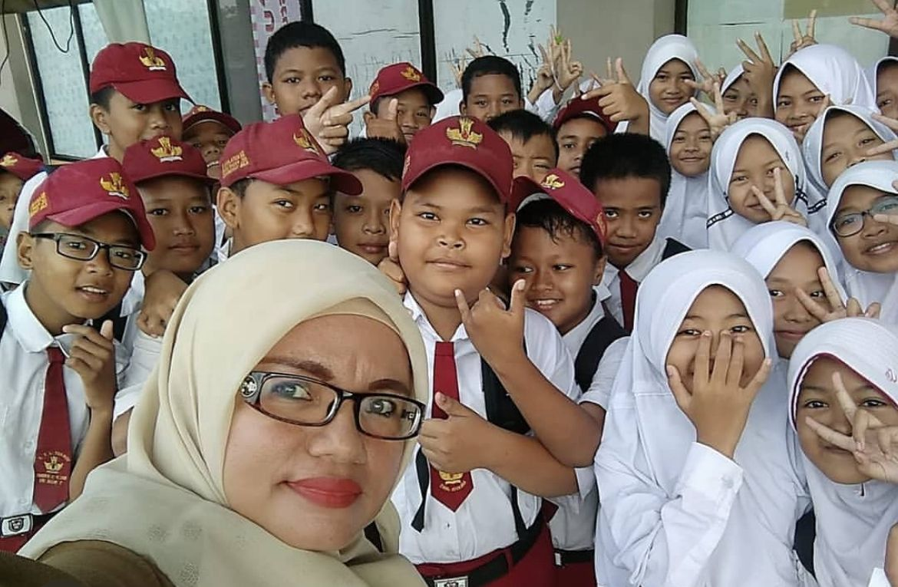

Masa SD adalah masa yang penuh dengan pembelajaran dan pengalaman baru. Di sekolah dasar, saya mulai mengenal banyak pelajaran, mengikuti kegiatan sekolah, dan bertemu teman-teman yang baik. Dari masa itu, saya belajar menjadi lebih mandiri dan bertanggung jawab.
Salah satu kenangan yang paling berkesan adalah saat mengikuti kegiatan kelas bersama teman-teman. Dan ada di suatu moment ketika kita semua sekelas menjadi pembawa acara untuk upacara bendera merah putih dan saya waktu itu di tugaskan menjadi pembawa bendera merah putih dan saya di tempatkan di posisi tengah (baki). Kami sering bekerja sama, bermain, dan saling membantu saat ada . Masa SD menjadi bagian indah yang penuh cerita, tawa, dan kebersamaan yang sulit dilupakan.